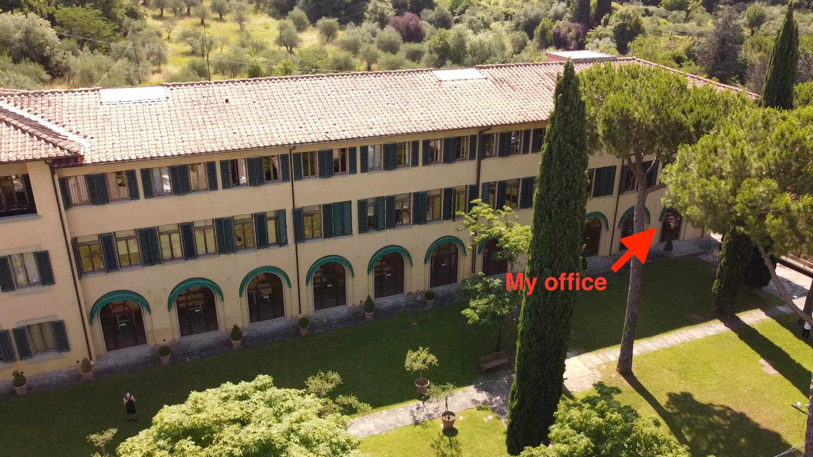

Focused on storage and DBs, but not only…
Full disclosure
My search for tools has been complemented with an AI-based query with the following prompt:
“Act as a data expert supporting researchers at an academic institution. List research- and academic-oriented tools and platforms that can help store, manage, and query data of the following types: image collection, large CSVs, oral history and text corpora. The audience is historians who are approaching the use of digital tools in their research workflow, so do not assume expert technical expertise”
The EUI ICT Service provides GDPR-compliant storage solutions:
However: no structured DB platform is available on premise or as a provided cloud service
Tip
We strongly advise to adopt more than one solution at the same time, following 3-2-1 backup rule
General purpose cloud storage solution, valid for all files and GDPR compliant.
Tip
We strongly advise to use the EUI VPN when moving files over the Internet VPN Remote Connection access service
*OneDrive still keeps deleted files in the cloud “bin” for 30 days.
Scans, photographs of archival documents, visual sources
Store and describe
For publishing on the web
The following are Open Source tools to be deployed on a server, so they require web hosting and a certain level of technical competences:
Bonus: transcribe and extract text
When Excel slows down or hits its limit (or just because text-based files are leaner to work with)
Explore and clean (no coding)
Query like a database
Analyse with code (when ready): Jupyter Notebooks, R / RStudio, Google Colab
Visualise: Tableau, RAWGraphs (free tier, then subscription)
Start here
Start with OpenRefine, then anything else.
Recorded interviews: audio, video, transcripts and the consent that goes with them
Check before you upload
Always consider the sensitive and personal nature of interviews and comply with GDPR and data security best practices.
Useful whatever your data type
Track versions
Deposit and cite your data
Anonymisation and Pseudonimisation
Encryption
Federica Signoriello also sent me this:
Simone Sacchi
Research Data Librarian, EUI Library
simone.sacchi@eui.eu | resdata@eui.eu
EUI Library Research Data Guide - EUI Library Trainings

Data tools for Historians - Digital History WG - 2026-10-20